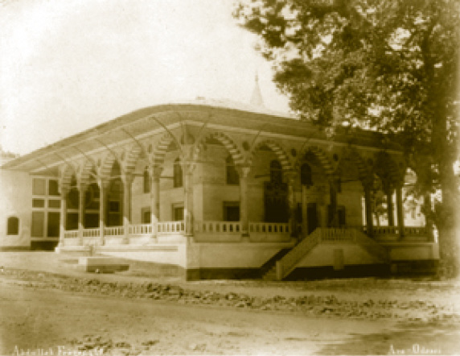
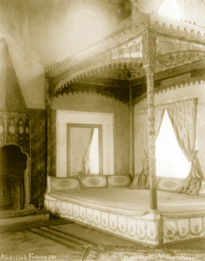
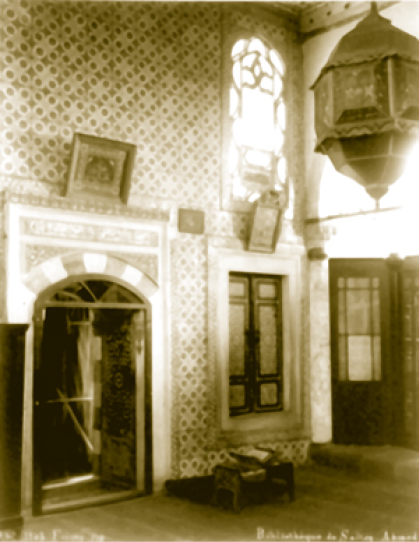

ENDERUN AVLUSU (III. AVLU)
Avlu, daha çok koğuşların bulunduğu bir mekândır ve alanı yaklaşık dokuz dönüm kadardır.
Enderun avlusu, bir kale içinde iç kale gibidir. Kârgir yapılarla çevrelenmiş olan avlunun kapıları (Bâbü’s saade, Araba ve Kuşhâne Kapıları) kapatıldığında buraya girilmesi mümkün değildir. Bugün Müze Müdüriyeti olan Kilerli Koğuşu ile Silahtar Koğuşu arasındaki geçitler, aslında olmayıp sarayın kullanılmadığı dönemde yapılan yenilemelerde açılmıştır. Enderun avlusuna Osmanlı tarihi boyunca sadece Genç Osman hâdisesi ve Sultan III. Selim’in şehit edilmesi sırasında girilmiş olması da güvenliğin bir ispatıdır.
Genç Osman Hâdisesi, tarihimizin ibretli bir sayfasıdır. İsyan eden yeniçeriler Bâbü’s saade’ye yüklenerek onu açmışlar ve padişahın hususi mekânına tecavüzde bulunmuşlardır. Şehzadegân Dairesi’nin kubbesinden bir delik açarak Sultan Mustafa’yı çıkartıp padişah yapmışlar ve Sultan Osman’ı Yedikule zindanlarına atmışlardır. Ne hazindir ki tarih, bir padişahın kendi askerleri tarafından öldürülüşüne şahit olur.
Avlunun başında Arz Odası bulunmaktadır. Yapının hemen arkasına düşen yerde III. Ahmed Kütüphanesi, avlunun sağ yanında Enderun Mektebi, Meşkhâne, Seferli Koğuşu, Fatih dönemine ait bir köşk ve Sultan II. Selim dönemine ait bir hamam kalıntısı; avlunun sol yanında ise Silahdar Hazinesi, Kilerli koğuşu, Mukaddes Emanetler’in saklandığı dört kubbeli Hırka-i Saadet Dairesi, Enderun Ağalar Camii, Ak Ağalar Koğuşu ve Kuşhâne bulunmaktadır.
Arz Odası
Arz Odası padişaha divanda kararlaştırılan hususların sadrazam tarafından arz edildiği yerdi, adını da bu faaliyetten almaktadır. Padişahın, divan toplantılarından sonra sadrazamla, kararlaştırılan hususları müzakere ettikleri bu mekân, aynı zamanda devlet büyüklerinin, elçilerin, ulemanın kabul edildiği yerdir. Arz Odası resmî mekândır, ancak Avrupa ve Rusya krallarının saraylarındaki elçi kabul salonlarına göre oldukça mütevazı sayılır.
Arz Odası, Bâbü’s saade’nin hemen karşısına yapılarak âdeta Enderun avlusuna perde yapılmış gibidir. Bâbü’s saade’den içeri bakan, avluyu değil bu odayı görür.
Arz Odası ilk olarak Fatih devrinde inşa edilmişse de zaman içerisinde ilk hâlini kaybetmiştir. 1509 İstanbul depreminde Arz Odası tahrip olmuş ve Kanuni döneminde yeniden yapılmıştır. Daha sonraki dönemde de çeşitli tamirler gören Arz Odası, bir anlamda saraya gelen padişah misafirlerinin kabul salonu olduğu için padişahların ilgisine mazhar olmuş ve imparatorluğun ihtişamını göstermek için çaba sarf edilmiştir.
Sultan Abdülmecid zamanında çıkan saray yangınında oda yanmış ve bu yangından geriye odanın sedir tahtı ile tunç kaplamalı ocağı kalmıştır. Bundan sonra yapılan tamirlerde Arz Odası eski ihtişamından uzak süsleme ve nakışlarla kaplanmıştır. 1946’da esaslı bir şekilde restorasyona tâbi tutulmuştur.
Arz Odası’nın bu dönemdeki ihtişamının tek nişanesi bugün odanın Bâbü’s saade’ye bakan cephesinde bulunan çeşmesidir. Kanuni devrinde yapılan bu çeşme üzerinde yer alan “Sultan-ı cihanbân Süleyman-ı zeman/ Cihanın sultanı, zamanın Süleyman’ı” diye başlayan kitabesinde, çeşmenin “Divan üyelerine sonsuz ab-ı hayat olması” temenni edilmektedir.
Mimari bakımdan bina yaklaşık 24 x 19 m. ölçülerindedir ve oda 16,13 x 10,36 m. ölçüsünde kapalı mekâna sahiptir. Odanın etrafında yer alan geniş saçak ilk zamanlar ahşap direkler üzerine otururken sonraları yerlerine yirmi iki mermer sütun konulmuştur.
Sütunların mukarnaslı başlıkları ve üstlerinde âdeta bayrak renklerini sembolize edercesine kırmızı ve beyaz taşlardan yapılmış kemerler ile Osmanlı mimarisinin nefis üslubuna işaret eder. Bu güzel yapıdaki mimari güzelliği görmek için Arz Odası’nın yanından geçip gitmek değil etrafında dolaşmak gereklidir.
Arz Odası’nın ikisi Bâbü’s saade, biri de Enderun avlusuna açılan üç kapısı vardır. Bunlar; Maruzat Kapısı, Pişkeş Kapısı ve hükümdarın kapısıdır. Padişaha arzda bulunacak olanlar Maruzat Kapısı’ndan odaya girerlerdi. İki kapı arasında çok büyük bir pencere vardır. Yabancı elçilerin yanlarında getirdikleri hediyeler bu kapı önüne bırakılır, daha sonra da hediyeler Pişkeş Kapısı’ndan odaya alınırdı. Pişkeş, hediye demektir. Bâbü’s saade’den Arz Odası’na doğrudan girildiği hâlde arka kapısından Enderun avlusuna bir çift merdivenle inilir. Bu, Bâbü’s saade’nin bulunduğu yerin Sarayburnu’nun en yüksek noktası olduğunu, ondan sonra da inişin başladığını gösterir.
Arz Odası’nın ön cephesi gayet güzel çini panolar ile süslüdür. Çeşme yanındaki Maruzat Kapısı’nın üzerinde Sultan III. Ahmed’in Besmelesi yer alır. Sol taraftaki Pişkeş Kapısı üzerinde de tuğra şekilli yazılarda Sultan Abdülmecid’i metheden ifadeler vardır. Babası III. Ahmed gibi hattat olan Sultan II. Mahmud Han’ın kendi yazdığı “Hasbünallâhü ve ni’me’l-vekil / Allah ne güzel vekildir.” ifadesi bulunmaktadır.
Arz Odası içinde padişahın mutlak otoritesini belirten unsurlar göze çarpar. Girişte tam karşıda padişaha ait baldaken taht (sedir-taht), ocak ve muhteşem kubbe vardır. Dışarıda olduğu gibi içeride de çeşme bulunur. Sultan III. Mehmed devrinden kalan tahtın dört burmalı sütunu vardır. Sütunların taşıdığı kubbesi lake süslemelerle çeşitli hayvan ve bitki motifleriyle kaplıdır. Süsleme aralıklarında değerli taş kakmaları kullanılmıştır.
Arz Odası’nda bulunan örtüler de işlemelerinde kullanılan değerli maden ve taşlardan dolayı oldukça kıymetlidir. Bu örtüler günümüzde sarayın hazine bölümünde saklanmaktadır.

Arz Odası’nın avludan görünüşü
Arz Odasında Kabuller
Arz Odası, Fatih devrinden itibaren padişahların Divân-ı Hümâyûn toplantılarına katılmamaları dolayısıyla toplantılarda alınan kararların kendilerine bildirilmesi maksadıyla ortaya çıkan bir mekândır. Dört asra yakın bir süre Osmanlı yönetimine şahit olmuştur. Divan üyeleri haftanın belli günlerindeki divan toplantılarının ardından padişahın huzuruna çıkmışlardır.
Arz Odası’nda görüşmeler başlayınca odanın içindeki ve dışındaki çeşmeler açılırdı. Akan suyun içeride ve dışarıda çıkarttığı tatlı şırıltılar konuşmaların dışarıdan dinlenilmesini engellerdi.
Divan-ı Hümâyûn toplantılarına başkanlık eden sadrazam arza çıkacağı günlerde arz edilecek hususların özetlerini padişaha gönderirdi.
Padişahtan sadrazama Hatt-ı Hümâyûn geldiğinde diğer divan üyeleriyle birlikte Bâbü’s saade’ye gelinir, Osmanlı teşrifat kaidelerine göre arza girilirdi. Arzda kapıya doğru dizilerek ayakta durulur, oturulmazdı.Önce yeniçeri ağası ocak hakkında malumat verir, ardından kazaskerler odaya girerek kadı tayinleri ile ilgili telhisleri okurlardı. Daha sonra merasimle sadrazam, diğer kubbe vezirleri ve defterdarlar Arz Odası’na kabul edilirdi. Malî meseleler defterdar tarafından padişaha okunurdu. İdarî konular ise sadrazam tarafından padişaha arz edilirdi. Gizliliği olan meseleler varsa vüzeranın çıkmasının ardından padişah ile sadrazam baş başa görüşürlerdi.
Arz Odası’nda elçi kabul günleri genellikle yeniçerilere ulûfe dağıtılan günlere rastlatılırdı. Böylece imparatorluğun ihtişamı dosta düşmana gösterilmek istenirdi. Gelen elçiler Bâbü’s selam’daki kapıcıbaşı odasına alınır, Osmanlı imparatorluk protokolüne uygun tarzda ikramlar yapılırdı. Elçiler çavuşbaşılar eşliğinde Kubbealtı’na getirilirdi. Kubbealtı’nda Müslüman bir devletin elçisi ise sadrazam hariç herkes ayağa kalkardı. Gelen Hıristiyan bir ülkenin elçisi ise kimse ayağa kalkmazdı. Divan’da genelde üç sofra kurulurken elçi kabullerinde beş sofra kurulur ve elçi sadrazamla aynı sofrada yemek yerdi.
Gelen elçiyi padişah kabul etme lütfunda bulunacak ise kapıcıbaşılar tarafından elçinin hem güvenlik gereği hem saygı ifadesi olarak kollarına girilir ve huzura götürülürdü. İçeri girdikten sonra da üç yerde padişahı selamlarlardı. 1667’de İstanbul’a gönderilen Rus elçisi bu geleneğe uymak istemeyip padişaha selam vermeyince silahdar ağa elçiyi ensesinden tuttuğu gibi başını yere eğmiş ve geleneksel merasimi yaptırmıştır.
Padişahın da uyması gereken belli başlı teşrifat kaideleri vardı. Padişah Serir-i Saltanat’ta, (sedir-taht) elçi kabul ederken elçinin anlattıklarını, Fenerli tercümanın çevirisinden dinlerdi. Huzura girenler padişahla göz göze gelemezler, elleri önde bağlı ve yüzleri yerde kıpırdamadan dururlardı.
Arz Odası’na sadece divan üyeleri ve elçiler alınmazdı. İstanbul’a gelen krallar, Kırım hanları, yabancı prensler de Arz Odası’nda kabul edilirlerdi.
Arz Odası’nın şahit olduğu en hazin tablo 1808’de yaşanmıştır. Sultan III. Selim’in Nizam-ı Cedid adı verilen yeniliklerine karşı çıkan Kabakçı Mustafa liderliğindeki asilere karşı koymak için Rusçuk Ayanı Alemdar Mustafa Paşa saraya gelmiştir. Asilerin elinden Sultan III. Selim’i kurtarmak için Bâbü’s saade’yi kırdırarak içeri girmişse de hünkârı Arz Odası ile Bâbü’s saade arasında başı ve yüzü paramparça edilmiş hâlde bulmuştur. Paşa, padişahının naaşına kapanıp ağlamıştır.

Arz Odası’nın içten görünüşü

1900’lü yılların başında III. Ahmed Kütüphanesi